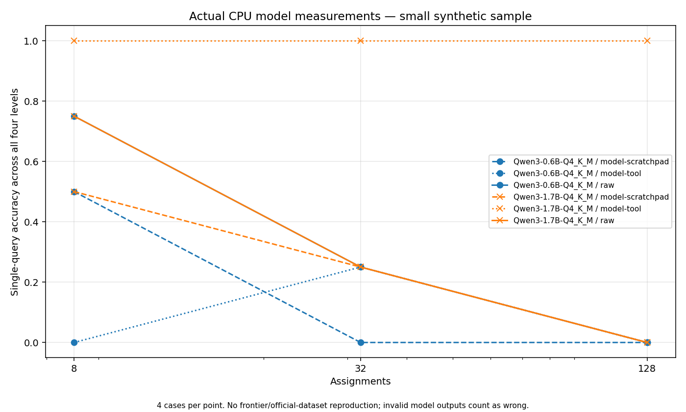

Both models: 8 to 128 assignments.
Four synthetic cases per point.
RESEARCH NOTE 004 / ARCHIVED EXPERIMENT
What gets lost
along the chain?
Two small language models. Four kinds of state tracking. A transparent look at where answers fail—and what happens when execution moves to a tool.
72measured case / method records
Qwen3 · CPU · Q4
Qwen3 · CPU · Q4
1.7B solved all tool-assisted cases.
The 0.6B model solved only 1/12.
Model-written JSON state did not
improve aggregate accuracy.
01 / THE FAILURE CURVE
Follow the state.
Scores come from real archived model calls.
Invalid model JSON counts as incorrect.
Archived aggregate: four cases per point.

Single queried variable · exact answer equalityDownload original figure →

| Model | Method | 8 steps | 32 steps | 128 steps | LLM calls |
|---|---|---|---|---|---|
| Qwen3-0.6B | Raw model | 3/4 (75%) | 1/4 (25%) | 0/4 (0%) | 12 |
| Qwen3-0.6B | Model-written state | 2/4 (50%) | 0/4 (0%) | 0/4 (0%) | 52 |
| Qwen3-0.6B | Model-delegated tool | 0/4 (0%) | 1/4 (25%) | 0/4 (0%) | 16 |
| Qwen3-1.7B | Raw model | 3/4 (75%) | 1/4 (25%) | 0/4 (0%) | 12 |
| Qwen3-1.7B | Model-written state | 2/4 (50%) | 1/4 (25%) | 0/4 (0%) | 55 |
| Qwen3-1.7B | Model-delegated tool | 4/4 (100%) | 4/4 (100%) | 4/4 (100%) | 24 |
Raw model
Read the full program and return one variable’s final integer value.
Model-written state
The same model writes complete JSON state after each 8-step chunk. Wrong values are never repaired from the answer key.
Model-delegated tool
The model requests an exact interpreter, then reads its persisted result. This offloads tracking; an interpreter alone already solves these formal programs.
02 / SHOW THE WORK
Every answer has a record.
Inspect predictions, expected values,
tokens, schema failures, and call traces.
The selector follows your model and difficulty filters. These are archived responses, not live inference.
Download the complete evidence JSON to inspect all archived cases.

171 actual model calls55,648 input tokens4,308 output tokens0 transport/context errors
03 / WHAT THIS CAN TELL US
A result, with its limits.
Task seed 42. Four initial variables. Lengths 8, 32 and 128. One case for each difficulty and length. Qwen3 0.6B and 1.7B Q4 were CPU substitutes for the larger 4B/8B Q4 deployment target on a 16GB RTX 5070 Ti.
Both raw curves decline on this tiny sample. Errors can reflect arithmetic, instruction following or JSON compliance as well as state retention. Four cases per point cannot establish a theoretical transformer ceiling.
The model-written state fix did not help either model overall. The tool arm recovered accuracy for 1.7B, while 0.6B often failed its tool protocol. That is measured tool use—not improved intrinsic memory or a new state-tracking algorithm.
Generators are tested up to 64,000 assignments. That is generation and interpreter testing, not 64K model inference. No frontier API, official dataset reproduction, Gated DeltaNet training or recurrent hybrid is included.
Reproduce the experiment →